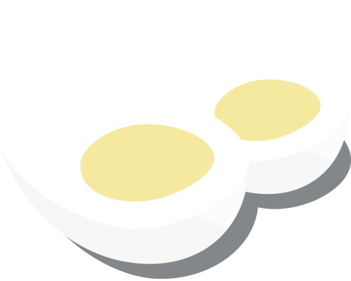

Hard Boiled
—
Cooked in boiling water with the shell on until yolk is completely set

Soft boiled
—
Cooked in boiling water with the shell on until whites are set, but yolk is still liquid

Sunny Side Up
—
Fried without ever fliping the egg, whites are cooked but yolk remains liquid

Poached
—
Removed from shell, then cooked in hot water or some other liquid

Over Easy
—
Fried until white is cooked, then flipped over momentarily so only the top of yolk is set

Over Hard
—
Fried until white is cooked, then flipped and cooked until yolk is completely set

Scrambled
—
Raw eggs beaten so the egg whites and yolks are mixed, then cooked in a skillet

Omelette
—
Similar to scrambled, but left flat and then folded and filled with a variety of ingredients